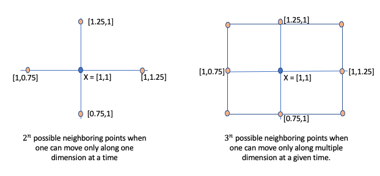

From the above plot, one can easily observe that $f(X)$ reaches a minimum value when $X = [0, 0]$ (i.e $x_1 = 0$ and $x_2 = 0$).
As humans, we can do this naturally as long as we can visualize the function. However, a typical machine learning problem will involve hundreds of features. So let's think how did we so easily find the point X at which $f(X)$ is minimum. One possible explanation is that our eyes randomly picked a point on the above surface and followed in the direction where the slope is decreasing. Finally, when the slop starts increasing again we know that we have crossed the minimum point. Let's try to transfer this idea into a proper python code. The logical flow of the problem will be as follows:
Step 1: Pick a random point $X = (x_0, x_1)$
Step 2: Identify the next point $X'$ such as that $f(X') < f(X)$. However, one challenge is how do we find $X'$. Let's start with some brute force. Assume we look for neighboring points that are $\eta$ distance away on a single dimension. For instance, as shown below figure (a), let's assume $X=[1,1]$ and $\eta = 0.25$. Then, the neighboring points to explore are [1-0.25, 1], [1 + 0.25, 1], [1, 1-0.25], [1, 1 + 0.25]. Thus, if X is n dimensional vector then there will be $2^n$ neighbors to explore. If we relax the constraint that one can only move $\eta$ distance along on one dimension at any given time, then we have additional four diagonal points as shown in the figure: [1-0.25, 1-0.25], [1+0.25, 1-0.25], [1-0.25, 1+0.25], [1+0.25, 1+0.25]. For n dimensional space then there will be $3^n$ neighboring points.

Ignoring the scalability issue for now, let's assume we do use the above approach to generate possible neighboring candidates at which we need to evaluate $f(X)$.
Step 3: Of all neighboring points at which $f(X') < f(X)$, pick the one with the maximum difference and set this new point around which we explore the space.
Step 4: Repeat step 2 and 3 until one reaches the point where $f(X') > f(X)$ for all neighboring point.
The below python code implements the above logic. It assumes $\eta$ to be 0.03